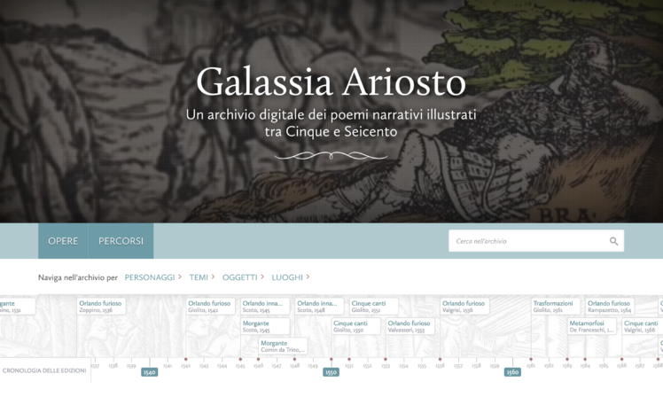

Il web project plan
Brief
Finalità e obiettivi
Il progetto consiste in un sito divulgativo collocato nell’ambito letterario. L’obiettivo di questo progetto è quello di offrire una panoramica del lavoro di revisione e dell’evoluzione editoriale di uno dei capisaldi della letteratura italiana: l’Orlando Furioso, di Ludovico Ariosto. Si tratta di una collezione di carattere comparativo delle prime e più importanti edizioni note del poema, a partire dai pochi manoscritti autografi a noi pervenuti fino alle più famose pubblicazioni a stampa, dotate di un apparato illustrativo di pregio.
Pubblico di riferimento
Il sito è pensato per un pubblico vasto: prevede una pagina di introduzione all’autore e all’opera, che renda accessibili a tutti le informazioni in seguito condivise. Rivolto quindi ai curiosi, agli studenti, ma anche agli esperti del settore, che hanno la possibilità di consultare le opere digitali per intero, laddove esistano, o venire direttamente reindirizzati ai cataloghi delle biblioteche di riferimento, per prenotarne eventualmente il prestito o la consultazione.
Accesso alla risorsa
Idealmente, ogni item sarebbe dotato di un’immagine, ovvero la versione digitale del manoscritto stesso o l’anteprima digitale di un’edizione a stampa, seguita da una descrizione testuale. Non essendo tuttavia reperibili le immagini di ciascuno degli item esposti, nella pratica mi limiterò a realizzare qualche esempio. L’idea sarebbe quella di poter fornire i testi per intero, per concretizzare la quale, tuttavia, sarebbe necessario un antecedente lavoro di digitalizzazione delle opere che purtroppo non è in mio potere fare. Il sito è pensato per essere consultato da computer, dunque in versione desktop.
Benchmark
Per quanto riguarda l’analisi dell’esistente, ho trovato particolarmente interessanti due risorse in particolare: https://www.alessandromanzoni.org/ e https://workinprogress.sns.it/. Il primo è un sito da cui ho tratto ispirazione a livello di idea e di design, sebbene l’interfaccia e la navigazione mi siano sembrate poco chiare e difficilmente fruibili da un utente base: la navigazione, infatti, avviene solo tramite ricerca e non fornisce la possibilità di visualizzare un’anteprima di tutti gli items. Il secondo è un sito che conoscevo già, un progetto realizzato dalla Scuola Normale Superiore di Pisa, che tuttavia al momento non è consultabile. Consiste in un archivio digitale dei maggiori poemi narrativi illustrati del ‘500-’600, navigabile per personaggi, per temi, per oggetti e per luoghi. L’ho trovato particolarmente accessibile, anche grazie alla linea temporale che racchiude tutte le edizioni presenti sul sito. Mentre questa risorsa si concentra sugli apparati illustrativi delle edizioni a stampa di opere multiple, mettendo in secondo piano l’aspetto testuale e contenutistico, il mio progetto è incentrato sull’evoluzione di una sola grande opera, a partire dalle prime testimonianze manoscritte fino ad arrivare alla versione definitiva, tramandata fino a noi.
Struttura
Mappa concettuale
Schema delle dipendenze
Categorie di un item foglia
- nome
- autore
- data
- luogo di pubblicazione
- editore
- titolo completo
- codice SBN
- tipo di oggetto
- lingua
- ubicazione
Layout
Architettura d'interfaccia
La pagina è costituita da tre o quattro componenti principali: l’header, che coincide con la navbar e si trova sempre all’apice della pagina (sticky navbar), anche scrollando i contenuti; il body, che contiene i titoli, i paragrafi, le immagini; le barre di navigazione, tra cui la già citata navbar (navigazione principale) e una sidebar che funge da navigazione secondaria e compare solo quando ci si trova nella pagina di navigazione primaria; il footer, che reca le informazioni sul copyright e sulla data di creazione e le voci della metanavigazione e si trova nel piè di pagina.
Per quanto riguarda gli strumenti di navigazione, sono previsti:
- la navigazione principale: la navbar con cinque voci (Home, Introduzione, Edizioni a stampa, Manoscritti, Bibliografia), che reca anche il logo del sito, anch’esso con la funzione di link alla Home;
- la navigazione secondaria: una sidebar posta sempre sul lato sinistro, che compare solo nelle pagine di navigazione primaria che prevedono delle sottopagine di navigazione secondaria: la sezione delle Edizioni a stampa e la sezione dei Manoscritti. La navigazione secondaria propone dei modi diversi di navigare il catalogo, secondo le categorie da me ritenute più importanti: per data, per editore, per biblioteca; per argomento, per biblioteca;
- la navigazione contestuale: nella pagina dell’item, alcuni dei campi dei metadati sono anche dei link di navigazione contestuale: cliccando, ad esempio, sulla biblioteca, si passa direttamente alla navigazione “per biblioteca”, nella pagina della specifica istituzione cliccata;
- breadcrumbs: le briciole di pane sono presenti in tutte le pagine eccetto la Home e segnano il percorso compiuto per arrivare alla pagina corrente.
- metanavigazione: per quanto riguarda la metanavigazione, ritengo siano sufficienti le informazioni indicate nel footer: un contatto (mail istituzionale dell’autrice del sito), la bibliografia, che è anche pagina di navigazione primaria, e la pagina del Web Project Plan.
Wireframe
Usabilità
Per quanto riguarda lo stile, essendomi servita di Bootstrap ho utilizzato il font proposto, aggiungendo il grassetto per i nomi di persone, le date e in generale le parole chiave e il corsivo per i titoli delle opere. Ho optato per uno stile essenziale e pulito, senza decorazioni superflue, per rendere il sito più facilmente fruibile; le sezioni testuali sono chiare e sempre accompagnate da delle immagini e dei sottotitoli per spezzare la lunghezza del paragrafo. Le pagine testuali (Introduzione, Edizioni a stampa, Manoscritti) vogliono essere di carattere più divulgativo e dunque fornire numerose informazioni, senza nessuna presupposta conoscenza dell’argomento; le pagine di navigazione della collezione, invece, presentano un’interfaccia intuitiva, dinamica e ricca di media.
Servizi
Come strumenti di arricchimento mi sono servita di una linea temporale, delle breadcrumbs, di cards, di avatar (pagina degli Editori), della pagination (pagina delle Edizioni a stampa per biblioteche) e di alcune tabelle.
Come tools specifici per l’interazione, presi dal sito di W3Schools HOWTO, ho trovato particolarmente utili:
- Images: Lightbox
- Images: Hero image
- Menus: Sidebar
- Buttons: Animated buttons
- Filters: Sort table
Bibliografia
Per le immagini mi sono servita delle seguenti risorse:
- https://live.staticflickr.com/3843/14755237936_0fc46230c3_c.jpg
- http://www.engramma.it/eOS/index.php?id_articolo=2894
- https://www.gazzettaitalia.pl/lottava-doro-di-ludovico-ariosto/
- http://www.engramma.it/eOS/index.php?id_articolo=2894
- https://www.poetryintranslation.com/PITBR/Italian/AriostoCantoXXXVII.php
- http://www.fondiantichi.unimo.it/fa/giustizia/bindoni.html
- https://www.tertullian.org/editions/scinzenzeler.htm
- https://marques.crai.ub.edu/en/printer/a12170227
- https://www.alamy.it/della-stampante-nel-dispositivo-di-gabriele-giolito-de-ferrari-1540-1546-giovanni-giolito-de-ferrari-1540-gabriele-giolito-de-ferrari-1546-giolitodevice-image184992203.html
- https://marques.crai.ub.edu/en/printer/a12566019
- https://marques.crai.ub.edu/en/printer/a1161285x
- https://www.lotsearch.de/lot/ruini-carlo-anatomia-del-cavallo-infermita-et-suoi-rimedii-opera-nuova-45068887
- https://marques.crai.ub.edu/es/impresor/a12290002
- https://it.wikisource.org/wiki/Pagina:Ariosto_-_Orlando_furioso,_secondo_la_stampa_del_1532,_Roma_1913.djvu/657
- https://marques.crai.ub.edu/en/printer/a11615382
- https://www.gonnelli.it/uk/auction-0017-1/boiardo-matteo-maria-orlando-innamorato-----5.asp
- https://immaginistampe-limes.cfs.unipi.it/blog/scheda/marca-tipografica-angelieri-giorgio/
- https://ilpiave.wordpress.com/2021/08/04/tipografia-veneziana-alberti-912/
- https://italianrarebooks.com/book/giovanni-battista-pigna-historia-de-principi-di-este-di-gio-batt-pigna-1570
- https://www.agefotostock.com/age/en/details-photo/mad-orlando-epic-poem-by-ludovico-ariosto-1474-1533-title-page-giovanni-mazzocco-edition-ferrara-1516-ferrara-biblioteca-comunale-ariostea-library/DAE-11154303
- https://www.flickr.com/photos/yalelawlibrary/50718251198
- https://marques.crai.ub.edu/es/impresor/a11609606
- https://www.gonnelli.it/it/asta-0011-2/da-todi-iacopone-le-poesie-spirituali----.asp
- https://leksikon.muzej-marindrzic.eu/bascarini-niccolo/
- https://edoc.hu-berlin.de/bitstream/handle/18452/18714/Andreoli%20-%20final.pdf
- https://www.prphbooks.com/blog/rampazetto
- https://darsenarte.wordpress.com/tag/incunaboli/
- https://cz.pinterest.com/pin/486811040959624830/
- https://www.finarte.it/auction/books-autographs-prints-rome-2019-06-20/erizzo-sebastiano-le-sei-giornate-mandate-in-luce-da-m-lodovico-dolce-31974?lang=en
- https://it.wikipedia.org/wiki/Nicol%C3%B2_d%27Aristotele
- https://www.movio.beniculturali.it/uniroma1/livesandlibraries/it/biblioteca-brancacciana
- https://vidoiltiro.com/2021/06/27/la-biblioteca-universitaria-di-bologna-bub/
- https://eventi.unibo.it/prenotazioni-bub
- https://www.comunepersiceto.it/la-citta-e-dintorni/cultura-3/itinerari-culturali/visita-al-centro-storico/la-chiesa-collegiata-e-la-torre-civica/
- https://zero.eu/it/news/chiude-la-biblioteca-di-san-giorgio-in-poggiale-di-via-nazario-sauro/
- https://www.comune.budrio.bo.it/it-it/vivere-il-comune/galleria-foto
- https://eventiculturali.emiliaromagnacultura.it/luogo/bim-biblioteca-comunale-di-imola/
- https://lingue.unibo.it/it
- https://auktionsverket.com/arkiv/online/510728/
- https://play.google.com/store/books/details?id=_J1bAAAAcAAJ&rdid=book-_J1bAAAAcAAJ&rdot=1
- https://www.edition-originale.com/fr/litterature/livres-illustres/larioste-orlando-furioso-1547-48296
- https://www.worthpoint.com/worthopedia/orlando-furioso-mad-roland-poems-1875676848
Per quanto riguarda i testi, ho raccolto le informazioni da Wikipedia e dai libri Leggere l'Orlando Furioso di Sergio Zatti e Frammenti autografi dell'Orlando Furioso di Santorre Debenedetti.
Per la progettazione e la realizzazione del sito mi sono poi servita dei template esistenti su Bootstrap, dei tutorials sul sito di W3Schools, di BBBootstrap per la timeline, di Lucidchart per la realizzazione della mappa concettuale e dello schema delle dipendenze, di Balsamiq per la realizzazione del wireframe e di Notion per l'organizzazione del piano di progetto.